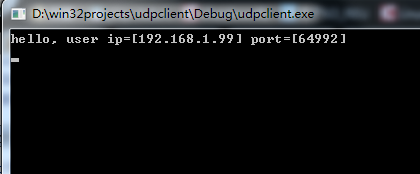

所谓udp打洞就是指客户端A通过udp协议向服务器发送数据包，服务器收到后，获取数据包，并且可获取客户端A地址和端口号。同样在客户端B发送给服务器udp数据包后，服务器同样在收到B发送过来的数据包后获取B的地址和端口号，将A和B的地址与端口号分别发送给对方，这样双方可以继续用UDP协议通信。这么做有什么用呢？因为对于一些应用或者需求，需要两个客户端临时做一些通信，而这种通信不需要建立tcp就可以完成，所以才去udp打洞。
下面附上测试代码：
头文件
1 | // udphole.cpp : 定义控制台应用程序的入口点。 |
服务器端核心代码。
1 |
|
下面是客户端发送消息的代码，比较简单。
1 |
|
效果如下，服务器收到来自客户端A和客户端B的报文后打印他们的信息，并且互相转发消息。
客户端A和客户端B分别打印对方的地址和端口号

到此为止，udp打洞的代码介绍完了。可以关注我的公众号，谢谢